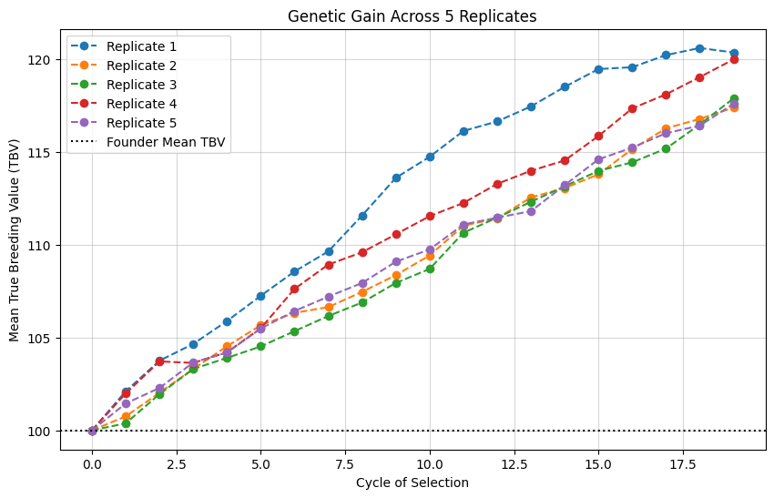

###CHEWC CODEBASE
import jax
import jax.numpy as jnp
import numpy as np
import matplotlib.pyplot as plt
from flax.struct import dataclass
from typing import List, Optional
from jax import lax, vmap
from functools import partial
## --- 1. CORE DATA STRUCTURES ---
@dataclass(frozen=True)
class Population:
geno: jnp.ndarray; meta: jnp.ndarray
@dataclass(frozen=True)
class Trait:
qtl_chromosome: jnp.ndarray; qtl_position: jnp.ndarray; qtl_effects: jnp.ndarray; intercept: jnp.ndarray
@dataclass(frozen=True)
class StaticConfig:
n_chr: int; n_loci_per_chr: int; ploidy: int; n_select: int; n_offspring: int
@dataclass(frozen=True)
class DynamicConfig:
genetic_map: jnp.ndarray; traits: List[Trait]
## --- 2. HOST-SIDE SETUP FUNCTIONS ---
def create_founders(key: jax.random.PRNGKey, s_config: StaticConfig, n_founders: int) -> Population:
geno = jax.random.randint(key, (n_founders, s_config.n_chr, s_config.ploidy, s_config.n_loci_per_chr), 0, 2, dtype=jnp.int8)
ids = jnp.arange(n_founders, dtype=jnp.int32)[:, None]
parent_ids = jnp.full((n_founders, 2), -1, dtype=jnp.int32)
birth_gen = jnp.zeros((n_founders, 1), dtype=jnp.int32)
return Population(geno=geno, meta=jnp.hstack([ids, parent_ids, birth_gen]))
def add_trait(key: jax.random.PRNGKey, founder_pop: Population, s_config: StaticConfig, d_config: DynamicConfig, n_qtl_per_chr: int, mean: jnp.ndarray, var: jnp.ndarray) -> DynamicConfig:
key, qtl_key, effect_key = jax.random.split(key, 3)
n_total_qtl = n_qtl_per_chr * s_config.n_chr
all_loci_indices = jnp.arange(s_config.n_chr * s_config.n_loci_per_chr)
qtl_loc_flat = jax.random.choice(qtl_key, all_loci_indices, (n_total_qtl,), replace=False)
qtl_chromosome, qtl_position = jnp.divmod(jnp.sort(qtl_loc_flat), s_config.n_loci_per_chr)
raw_effects = jax.random.normal(effect_key, (n_total_qtl, mean.shape[0]))
correlated_raw_effects = raw_effects @ jnp.linalg.cholesky(jnp.identity(mean.shape[0]))
temp_trait = Trait(qtl_chromosome, qtl_position, correlated_raw_effects, jnp.zeros_like(mean))
founder_dosage = jnp.sum(founder_pop.geno, axis=2, dtype=jnp.int8)
initial_gvs = jnp.dot(founder_dosage[:, qtl_chromosome, qtl_position], correlated_raw_effects)
scaling_factors = jnp.sqrt(var / (jnp.var(initial_gvs, axis=0) + 1e-8))
final_intercepts = mean - (jnp.mean(initial_gvs, axis=0) * scaling_factors)
final_add_eff = correlated_raw_effects * scaling_factors
final_trait = Trait(qtl_chromosome, qtl_position, final_add_eff, final_intercepts)
return d_config.replace(traits=[final_trait])
## --- 3. MEIOSIS AND SIMULATION KERNELS ---
_get_locus_positions = jax.jit(lambda genetic_map: jnp.cumsum(genetic_map, axis=-1))
def _sample_chiasmata(key: jax.random.PRNGKey, map_length: jnp.ndarray, v_interference: float, max_crossovers: int) -> jnp.ndarray:
shape, scale = v_interference, 1.0 / (2.0 * v_interference)
def scan_body(carry, _):
key, last_pos = carry; key, subkey = jax.random.split(key)
new_pos = last_pos + jax.random.gamma(subkey, shape) * scale; return (key, new_pos), new_pos
key, initial_key = jax.random.split(key); init_carry = (key, jax.random.uniform(initial_key, minval=-1.0, maxval=0.0))
_, crossover_positions = lax.scan(scan_body, init_carry, None, length=max_crossovers)
return jnp.where((crossover_positions > 0) & (crossover_positions < map_length), crossover_positions, jnp.inf)
def _create_gamete_for_chromosome(key: jax.random.PRNGKey, parental_haplotypes: jnp.ndarray, locus_positions: jnp.ndarray, v_interference: float, max_crossovers: int) -> jnp.ndarray:
key, chiasma_key, hap_key = jax.random.split(key, 3)
sorted_crossovers = jnp.sort(_sample_chiasmata(chiasma_key, locus_positions[-1], v_interference, max_crossovers))
locus_segments = jnp.searchsorted(sorted_crossovers, locus_positions, side="right")
start_hap = jax.random.choice(hap_key, jnp.array([0, 1], dtype=jnp.uint8))
haplotype_choice = (start_hap + locus_segments) % 2
return jnp.where(haplotype_choice == 0, parental_haplotypes[0], parental_haplotypes[1])
def _cross_pair(key: jax.random.PRNGKey, mother_geno: jnp.ndarray, father_geno: jnp.ndarray, locus_positions: jnp.ndarray, n_chr: int, v_interference: float, max_crossovers: int) -> jnp.ndarray:
key_mother, key_father = jax.random.split(key)
vmapped_gamete_creator = vmap(_create_gamete_for_chromosome, in_axes=(0, 0, 0, None, None))
mother_gamete = vmapped_gamete_creator(jax.random.split(key_mother, n_chr), mother_geno, locus_positions, v_interference, max_crossovers)
father_gamete = vmapped_gamete_creator(jax.random.split(key_father, n_chr), father_geno, locus_positions, v_interference, max_crossovers)
return jnp.stack([mother_gamete, father_gamete], axis=1)
# --- FIX WAS HERE: Removed the nested @jit from this helper function ---
def create_offspring(key: jax.random.PRNGKey, parent_population: Population, pairings: jnp.ndarray, s_config: StaticConfig, d_config: DynamicConfig, current_gen: int, max_crossovers: int = 20, v_interference: float = 2.5) -> Population:
n_crosses, n_chr = pairings.shape[0], s_config.n_chr
mother_indices, father_indices = pairings[:, 0], pairings[:, 1]
mothers_geno, fathers_geno = parent_population.geno[mother_indices], parent_population.geno[father_indices]
locus_positions = _get_locus_positions(d_config.genetic_map)
offspring_geno = vmap(_cross_pair, in_axes=(0, 0, 0, None, None, None, None))(
jax.random.split(key, n_crosses), mothers_geno, fathers_geno, locus_positions, n_chr, v_interference, max_crossovers)
offspring_ids = jnp.arange(n_crosses, dtype=jnp.int32)[:, None]
mother_ids, father_ids = parent_population.meta[mother_indices, 0], parent_population.meta[father_indices, 0]
birth_gen = jnp.full((n_crosses, 1), current_gen, dtype=jnp.int32)
return Population(geno=offspring_geno, meta=jnp.hstack([offspring_ids, jnp.stack([mother_ids, father_ids], axis=1), birth_gen]))
def generation_step(carry, gen_idx: int, s_config: StaticConfig, h2: float):
current_pop, key, d_config = carry
key, pheno_key, mate_key, cross_key = jax.random.split(key, 4)
dosage = jnp.sum(current_pop.geno, axis=2, dtype=jnp.int8)
trait = d_config.traits[0]
tbv = jnp.dot(dosage[:, trait.qtl_chromosome, trait.qtl_position], trait.qtl_effects) + trait.intercept
genetic_variance = jnp.var(tbv, axis=0)
var_e = genetic_variance * (1.0 / (h2 + 1e-8) - 1.0)
phenotypes = tbv + jax.random.normal(pheno_key, tbv.shape) * jnp.sqrt(jnp.maximum(0, var_e))
top_parent_indices = jnp.argsort(phenotypes.flatten())[-s_config.n_select:]
selected_parents_pop = jax.tree.map(lambda x: x[top_parent_indices], current_pop)
parent_pool_indices = jnp.arange(s_config.n_select)
mothers = jax.random.choice(mate_key, parent_pool_indices, (s_config.n_offspring,))
fathers = jax.random.choice(mate_key, parent_pool_indices, (s_config.n_offspring,))
fathers = jnp.where(mothers == fathers, (fathers + 1) % s_config.n_select, fathers)
pairings = jnp.stack([mothers, fathers], axis=1)
offspring_pop = create_offspring(cross_key, selected_parents_pop, pairings, s_config, d_config, current_gen=gen_idx + 1)
return (offspring_pop, key, d_config), {'mean_tbv': jnp.mean(tbv)}
@partial(jax.jit, static_argnames=('s_config', 'n_cycles', 'h2'))
def run_simulation(initial_pop: Population, initial_key: jax.random.PRNGKey, s_config: StaticConfig, d_config: DynamicConfig, n_cycles: int, h2: float):
scan_body = lambda carry, gen_idx: generation_step(carry, gen_idx, s_config=s_config, h2=h2)
initial_carry = (initial_pop, initial_key, d_config)
(final_pop, _, _), history = lax.scan(scan_body, initial_carry, jnp.arange(n_cycles))
return final_pop, history
## --- 4. MAIN EXPERIMENT SCRIPT ---
if __name__ == '__main__':
print("🧬 Setting up initial population and configuration...")
master_key = jax.random.PRNGKey(42)
n_founders, n_replicates, n_cycles, h2 = 50, 5, 20, 0.2
s_config = StaticConfig(n_chr=10, n_loci_per_chr=100, ploidy=2, n_select=20, n_offspring=50)
d_config = DynamicConfig(genetic_map=jnp.full((s_config.n_chr, s_config.n_loci_per_chr), 0.01), traits=[])
founder_pop = create_founders(master_key, s_config, n_founders)
final_d_config = add_trait(master_key, founder_pop, s_config, d_config, 10, jnp.array([100.0]), jnp.array([10.0]))
trait = final_d_config.traits[0]
initial_tbv_mean = jnp.mean(jnp.dot(jnp.sum(founder_pop.geno, axis=2)[:, trait.qtl_chromosome, trait.qtl_position], trait.qtl_effects) + trait.intercept)
print(f" - Founder population created with Mean TBV: {initial_tbv_mean:.2f}")
print(f"\n🚀 Preparing & running {n_replicates} replicates in parallel for {n_cycles} cycles each...")
replicate_keys = jax.random.split(master_key, n_replicates)
sim_partial = partial(run_simulation, n_cycles=n_cycles, h2=h2)
vmapped_simulation = vmap(sim_partial, in_axes=(None, 0, None, None))
final_pops, history = vmapped_simulation(founder_pop, replicate_keys, s_config, final_d_config)
print(" - Simulation complete.")
print("\n🔎 Analyzing results...")
final_tbvs = history['mean_tbv'][:, -1]
print(" - Mean TBV of final generation for each replicate:")
for i in range(n_replicates):
print(f" - Replicate {i+1}: Initial TBV = {initial_tbv_mean:.2f} -> Final TBV = {final_tbvs[i]:.2f}")
print(f"\n - Average Final TBV across all replicates: {jnp.mean(final_tbvs):.2f}")
plt.figure(figsize=(10, 6))
for i in range(n_replicates):
plt.plot(np.array(history['mean_tbv'][i]), marker='o', linestyle='--', label=f'Replicate {i+1}')
plt.axhline(float(initial_tbv_mean), color='black', linestyle=':', label='Founder Mean TBV')
plt.title(f'Genetic Gain Across {n_replicates} Replicates'); plt.xlabel('Cycle of Selection')
plt.ylabel('Mean True Breeding Value (TBV)'); plt.legend(); plt.grid(True, alpha=0.5); plt.show()
print("\n✅ Script finished successfully.")WARNING:2025-10-03 03:42:24,581:jax._src.xla_bridge:794: An NVIDIA GPU may be present on this machine, but a CUDA-enabled jaxlib is not installed. Falling back to cpu.🧬 Setting up initial population and configuration...
- Founder population created with Mean TBV: 100.00
🚀 Preparing & running 5 replicates in parallel for 20 cycles each...
- Simulation complete.
🔎 Analyzing results...
- Mean TBV of final generation for each replicate:
- Replicate 1: Initial TBV = 100.00 -> Final TBV = 120.34
- Replicate 2: Initial TBV = 100.00 -> Final TBV = 117.37
- Replicate 3: Initial TBV = 100.00 -> Final TBV = 117.86
- Replicate 4: Initial TBV = 100.00 -> Final TBV = 119.96
- Replicate 5: Initial TBV = 100.00 -> Final TBV = 117.57
- Average Final TBV across all replicates: 118.62
✅ Script finished successfully.